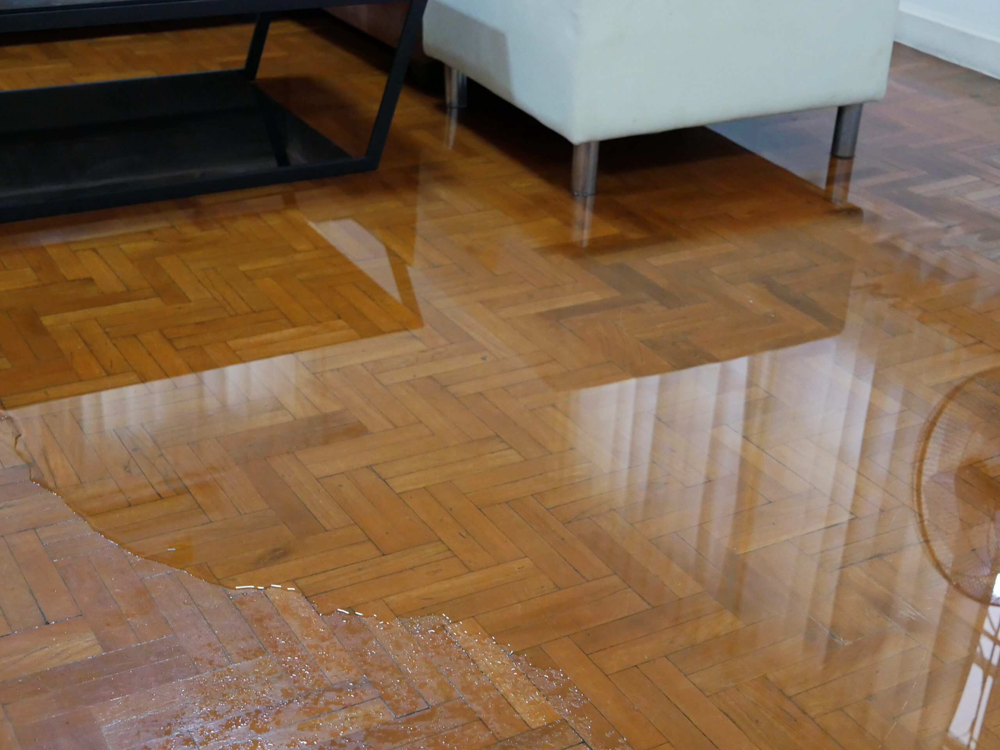

We provide professional water damage restoration services that move quickly to remove water, dry affected areas, and restore your property safely after leaks, flooding, or storm damage. Understanding how long restoration takes helps property owners plan for repairs, reduce stress, and know what to expect during recovery.
Water damage can feel overwhelming, especially when you’re unsure how long the process will last. The timeline for water damage restoration varies depending on the severity of the damage, the materials affected, and how quickly the issue is addressed. In many cases, restoration can take several days, while larger or more complex situations may require multiple weeks. Acting quickly and using professional equipment can significantly reduce drying time and prevent further structural damage or mold growth.
For most residential properties, the basic water damage cleanup process takes between three and seven days. This timeframe typically covers water removal, structural drying, and initial inspections to ensure moisture levels return to normal.
However, this estimate applies to moderate water damage where the affected areas are limited and the water source is quickly controlled. If multiple rooms are affected or if water has soaked into flooring, drywall, and insulation, the timeline can extend further.
Once the drying stage is complete, repairs such as replacing drywall, installing flooring, or repainting may add additional days or weeks depending on the scope of work.
The first step in restoration is removing standing water as quickly as possible. Professional water extraction services use high-powered pumps and industrial vacuums to remove large amounts of water in a short period of time.
This stage often takes several hours to one full day depending on how much water is present. Homes affected by burst pipes or appliance leaks may require less time, while flooding from storms or sewer backups can take longer due to larger volumes of water.
Fast extraction is critical because the longer water sits, the deeper it penetrates into building materials. Quick removal helps prevent damage from spreading throughout the property.
After water extraction, the drying phase begins. This is often the longest part of the water damage restoration process because moisture hides inside materials that cannot be dried instantly.
Industrial air movers and dehumidifiers are placed throughout the affected areas to remove moisture from walls, flooring, and structural components. Technicians monitor moisture levels daily using specialized equipment to track progress.
For most homes, structural drying takes three to five days. However, severe water damage affecting subfloors, insulation, or framing can require up to a week or longer to fully dry.
Several factors determine how long restoration will take. The type of water involved plays a major role. Clean water from plumbing leaks is easier to handle than contaminated water from sewage backups or flooding.
The amount of water and the number of affected rooms also influence the timeline. Small localized leaks may be resolved quickly, while whole-home flooding requires extensive drying and cleanup.
Other factors include:
Each of these elements can extend or shorten the overall property restoration timeline.
Once the drying process is complete, restoration professionals begin repairing damaged areas. This stage may involve replacing drywall, repairing baseboards, installing new flooring, or repainting walls.
Minor repairs may only take one or two days, while larger reconstruction projects can take several weeks. Homes with severe structural damage may require additional inspections and rebuilding before returning to normal.
Many restoration companies handle both drying and reconstruction to streamline the process and avoid delays between contractors.
One of the biggest concerns during water damage recovery is mold growth. Mold can begin developing within 24 to 48 hours when moisture remains trapped inside building materials.
Professional restoration teams monitor humidity levels carefully and use specialized drying equipment to prevent mold from forming. In some cases, antimicrobial treatments may be applied to surfaces as an added protective measure.
Addressing moisture quickly not only speeds up restoration but also protects indoor air quality and prevents additional remediation work later.
The sooner restoration begins, the faster the entire process can be completed. Water spreads quickly through flooring, walls, and structural materials, making delays costly.
Professional restoration teams use advanced moisture detection tools, powerful drying equipment, and proven restoration techniques to accelerate recovery. Their experience allows them to identify hidden moisture that homeowners may overlook.
Fast response also reduces the risk of long-term structural damage, which can dramatically increase repair timelines and expenses.
During the restoration process, technicians may move furniture, remove damaged materials, and install drying equipment throughout the property. Fans and dehumidifiers may run continuously for several days while moisture levels are monitored.
Although this equipment can be loud, it plays a crucial role in removing hidden moisture and preventing future issues. Clear communication from restoration professionals helps homeowners understand each step and know when repairs will begin.
The goal is always to return the property to its original condition as quickly and safely as possible.
When you need water damage restoration completed quickly and correctly, S.W.A.T. Restoration is ready to help. Our team responds fast with advanced drying equipment, professional water extraction, and full restoration services designed to bring your home or business back to normal. From emergency cleanup to final repairs, we manage the entire process with precision and care.
If your property has experienced flooding or water damage, acting quickly can shorten the restoration timeline and prevent bigger problems. Contact S.W.A.T. Restoration today for expert service and dependable results.